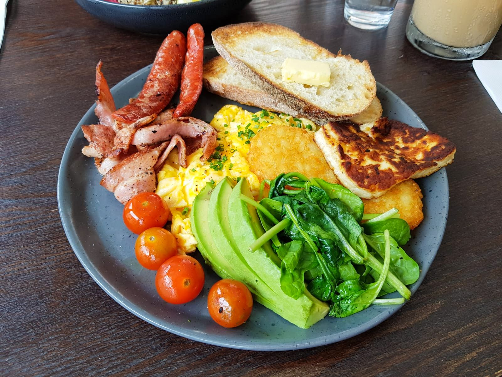

Big Breakfast
Return to Home

This breakfast spread is simple as things come, great for waking up slowly and putting together a hearty feast!
Ingredients
- Avocado
- Sourdough Bread
- Cherry Tomatoes
- Hash Browns (frozen)
- Halloumi
- Bacon
- Butter and Olive Oil
- Spinach leaves
- Eggs
Steps
- Start by heating a pan up to a low to mid temp before beginning to sizzle the bacon as well as the hashbrowns in Olive Oil.
- Next slice up the halloumi as well as some avocado
- Begin frying the Halloumi, making sure to turn everything on the pan periodically
- Make sure to set the toast in once you've turned everything once.
- Once everything is close to finishing, add the cherry tomatoes to the pan for a light colouring
- Once ready, serve with buttered Toast, fresh spinach and any other dressings/condiments of your choosing.
de